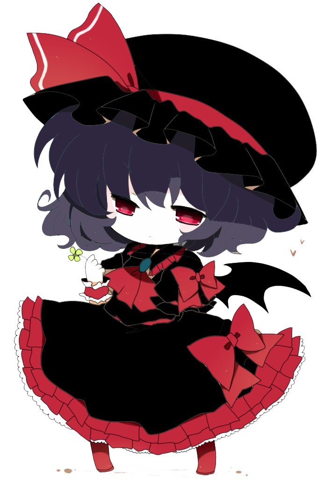

IV
Apareció delante mío un ser que vestía de una manera que parecía un pobre recolor de lo que llevaba Aze.
"Tea. Este es el fin de LSDC."
Cuando me habló, me di cuenta de que estabamos en un cubículo, mientras podia escuchar las voces de los demás afuera.
"... quien sos??"
"Ah si, soy Fox."
"Yo los maté."
¿Qué? Fox... Aunque manteníamos poquísimo contacto con ella, siempre la consideramos un miembro más. Si realmente era ella, había cambiado demasiado.
"Tras mi letargo, me he convertido en un ser mágico y he venido a divertirme con esta reunión."
"Ahora, moriréis juntos."
"Fox... ¿por... por qué nos harias esto?"
"La NASA no os lo dice, pero muchas facciones os quieren silenciar. Yo solo evité que os hubierais encontrado a alguien peor."
"Ah, y umm... por diversión."
"No... no puedo creer en tus palabras."
"¿Pero creerás en los hechos? Comencé por Leros, usé una extensa y resistente hebra de mi cabello y lo até contra la ventana para que no respirara más."
"¿Pero creerás en los hechos? Comencé por Leros, usé una extensa y resistente hebra de mi cabello y lo até contra la ventana para que no respirara más."
"Luego, usé la propia arma de Aze para apuñalar a Nora cuando los asistentes no estaban, y la transporté a la habitación que no debia tener llave, porque me encargué de esconderla."
"Eh, pero entonces Mati la encontró y tuve que romper el tronco que sostenía el árbol a su lado."
"Marisco decidió enfrentarme ella misma, asi que le di una batalla justa."
"Ahora, todos estan en un lugar donde puedo simplemente acabar con—"
"No, no has sido tu."
"Nadie en LSDC podria jamás hacerle semejante daño a sus amigos. Ni siquiera por razones tan soberbias."
Dejamos un largo silencio incómodo. Esperé una respuesta de su parte, pero solo me dió otra pregunta.
"¿...Por qué no lo aceptas?"
Fox solo me dejó un breve tiempo hasta sacar la lanza de Aze y levantar su mano, como a punto de lanzar un hechizo.
"¡Yo... te lo puedo probar!"
Fox mostró una leve sonrisa, no sabría decir si de malicia o de gratitud, pero no dejó de hacer ese gesto amenazador.
"Hay cosas que no cuadran... como, erm... la trampa en la que cayó Edd, ¿por qué pondrías algo asi si pudiste haber hecho uno de tus trucos para matarlo rápidamente?"
"Puede que solo haya sido una amenaza, o un señuelo para que le presten atención a otra trampa, más improvisada pero aplastante."
"Em... y... ¿cómo sabemos que realmente te llevaste a Marisco?"
"Hmm... no lo sé, pero ella misma te lo dijo. Que lo que sea que esté pasando en esta isla no era natural. Si no es una pesadilla, entonces es magia. La mía."
"Magia, eh..."
"E-entonces, responde a esto. El asesinato de Leros pudo haber sido ejecutado por un humano perfectamente — "
"Tan solo necesitaría algo para atraerlo a la ventana, meter rápidamente sus manos para sostener su cuello con el alambre, y luego dejarlo colgado, ¿no?"
Fox cambió su expresión a una seria y soltó la lanza.
"Escucha, Tea. Si quieres jugar a esto, entonces te daré esta oportunidad."
"Si logras demostrar que no hice esto, entonces puedo pensar en otro final."
Lo llevamos entre todos a la mansión, donde hicimos lo posible para curar las heridas pero perdió la consciencia y mantuvo un pulso lento. Tuvimos que esperar a ver si podía recuperarse.